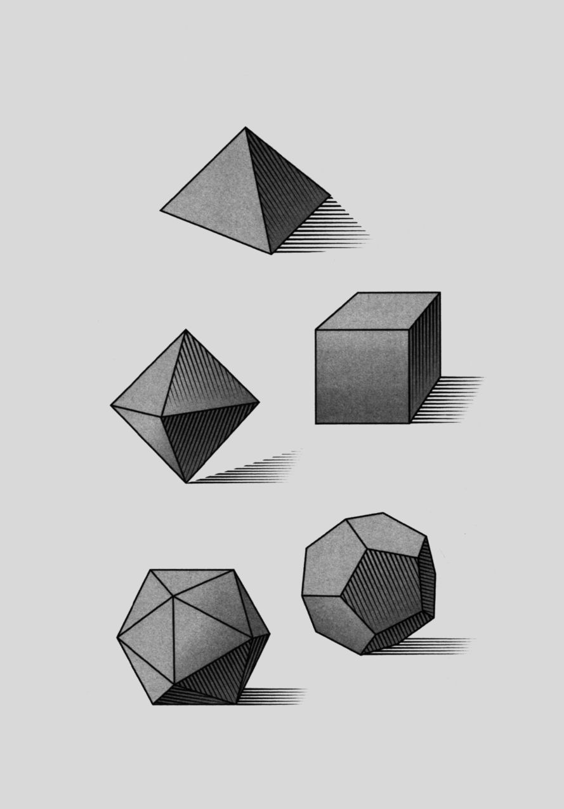

20 疱疹和食盐有什么共同点
数学概念：柏拉图多面体
并不是所有的三维形状都是相同的，想想那些存在或可能存在的形状：马铃薯的形状是块状的、不规则的；星星的形状是整齐有序的，它的线条整齐笔直；球体的形状是圆的、平滑的；俄罗斯方块则有锐利的边缘。
但是，有些形状很特别，它们的特征被研究了几千年，其中就包括柏拉图多面体。柏拉图多面体是以公元前4世纪的雅典哲学家柏拉图的名字命名的，这些三维形状由正方形、三角形、五角形等二维形状组成，必须满足一定的条件：
1．形状是规则的，也就是说，所有线条的长度是相等的，所有角度的大小也是相同的。
2．必须是全等的，也就是说，所有形状都是相似的，如果把一个形状放在另一个上面，它们是完全契合的（换句话说，不同大小的三角形无法组成柏拉图多面体）。

3．在每个顶点处，即一个形状的线条相交的地方，必须有相同数量的形状。
柏拉图多面体有且只有五种：
1．正四面体有四个面，每个面都是三角形。
2．正方体由四个正方形组成。
3．正八面体有八个面，就像两座金字塔的底座合在一起形成的形状（和正四面体一样，每个面都是三角形）。
4．正十二面体有十二个面，每个面都是五角形。
5．正二十面体有二十个面，每个面都是三角形。
如果想知道为什么只有五种柏拉图多面体，古希腊数学家欧几里得可以为你解答，他在《几何原本》里证明了这个问题，可以供你参考。
这些形状不仅仅是数学问题。在柏拉图的《蒂迈欧篇》中，这位希腊大哲学家（通过他虚构的一个人物）提出，不同的多面体对应自然中的不同元素：正四面体对应火元素，正方体对应土元素，正八面体对应气元素，正二十面体对应水元素，正十二面体则对应天空中的星座分布。
到了16世纪，约翰尼斯·开普勒利用柏拉图多面体来解释太阳系的结构，他好奇行星为什么这么分布，提出用球体代表每个行星，在行星的运行轨道之间放一个柏拉图多面体，模拟出行星之间的距离。首先从太阳系内部开始，对应的柏拉图多面体依次是正八面体（对应水星的运行轨道）、正二十面体、正十二面体、正四面体和正方体（开普勒认为太阳系只有五颗行星）。
尽管开普勒的解释是错误的，但有一点是正确的：柏拉图多面体的确是自然的一部分，例如：
●许多矿物晶体都是四面体，包括食盐（氯化钠）。如果沿着死海的岸边走，你会踩在大块的盐正方体上，它们是从深海中被冲上来的。
●钻石和绿萤石常呈正八面体的形状。
●病毒，如疱疹，常常是正二十面体。
●原子常常结合成正四面体形状，甲烷和铵离子的分子由四个氢原子组成，它们围绕着一个碳原子或者氮原子，形成一个四面体。
柏拉图多面体不只存在于古希腊巨著中，它们也存在于我们呼吸的空气和脚下的土地中。
二面角
每个柏拉图多面体都包含二面角，即两个面之间的内角。因为每个面都是相同的，所以每个二面角也是相等的。例如，正方体的二面角是90°，和顶角相等；正四面体的二面角是70．6°，它的顶角是60°。二面角越大，多面体与球体越相似。